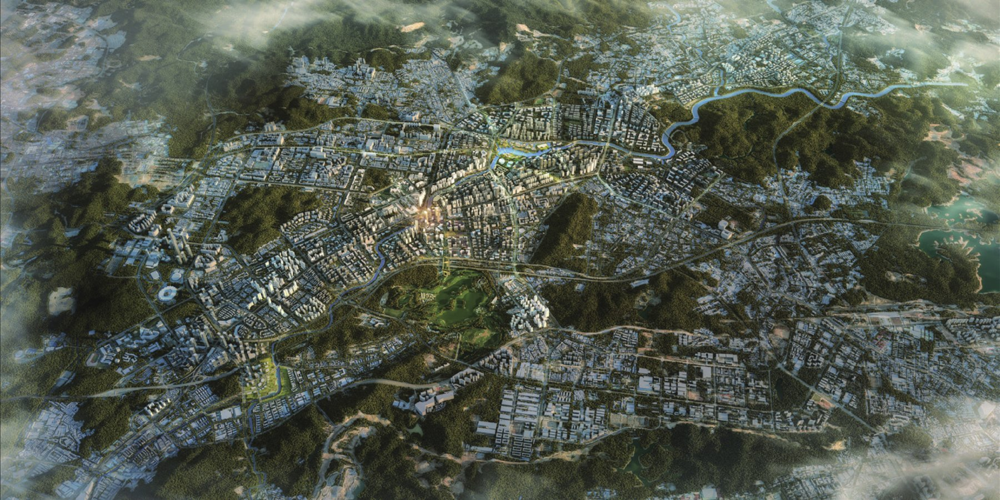

SHENZHEN / 2019 / COLLABORATIVE URBAN DESIGN
Longgang River
Reconnecting communities with the river.

Region, river, city
The river corridor links a sequence of urban centers in eastern Shenzhen. The proposal addresses limited development space, flood protection, and fragmented urban renewal through a shared corridor framework.
A continuous spatial structure
Land use, public space, and ecological connections are brought together through compact development, multiple spatial dimensions, and resilient landscape strategies.
PORTFOLIO
Project 01 / Pages 03–06. Academic and professional work portfolio.